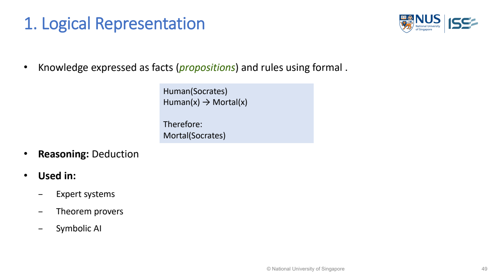

First-order（一階） / predicate logic（謂詞邏輯）
Predicate logic describes objects, their properties and relationships using predicates（謂詞；描述性質或關係）, variables（變數） and quantifiers. It makes the scope of a rule explicit（明確；直接提供的資訊）.
The quantifier（量詞） ranges over days; the conditional applies only when its premise（前提；推理的依據） holds.
Lecture example redrawn · MR Day-4_JR_v1.pdf · PDF p.6

MR-Day 2_JR_v1.pdf · PDF p.48 / printed slide 49. Original supplied slide, not redrawn.
What to draw / write: Logical representation
∀x (Student(x) → Human(x)) Student(Alice) Therefore: Human(Alice)
- ∀x
- For every object x in the stated domain.
- Student(x), Human(x)
- Predicates: x is a student / human.
- →
- If the left statement holds, the right statement follows.
Exam answer: Define the domain and predicates, write the facts and rule, then show the inferred conclusion. The Student rule is on PDF p.46; this instantiation with Alice is an application of that notation.
MR-Day 2_JR_v1.pdf · PDF p.48
Illustrative quantifier and direction checks
Worked study example: Use the lecture rainy-day example. The domain is all days under discussion. Words are shown alongside logic to avoid introducing unexplained notation.
| Claim | Meaning | Test case | Result |
|---|---|---|---|
| Every rainy day has wet streets | For each day: rainy implies wet | Dry sunny day | Does not violate rule |
| Every day is rainy and wet | Rain and wetness both asserted daily | Dry sunny day | Violates stronger claim |
| At least one rainy day exists | Existential claim only | Other days can be dry | Allowed |
| Wet day implies rainy | Reverse implication（蘊涵；若前件成立則後件成立） | Sprinkler wets street | Shows reversal is not justified |
What this tells us: The first and second sentences are different despite sharing vocabulary. The correct representation（表徵；資料的表示方式） must preserve both quantifier scope and implication direction.
How do predicates express objects and relationships?
- Predicate logic makes explicit which object（客體；三元組終點） a statement refers to. A predicate such as Rainy(day) describes a property; a relation（關係；對象間的連結） such as Treats(doctor,patient) has ordered roles. Swapping arguments changes meaning even though the same entities（實體；被描述的對象） remain present.
- Quantifiers describe scope. “Every” imposes a property or implication on all objects in the declared domain; “there exists” only asserts at least one. In an exam, define the domain before formalising so that an accidental choice such as all days versus all recorded rainy days does not weaken the statement.
- An implication only promises the consequent（後件；THEN結果） when the condition holds. It does not assert that the condition occurs, nor that it is the only cause. A readable answer should translate the formal sentence back into ordinary language and test a counterexample（反例；推翻一般說法的例子）; unfamiliar symbols without this explanation add no useful reasoning（推理）.
Implementation steps and their purpose
- Define the domain of objects.
- Name predicates and what each argument means.
- Translate relations and conditions.
- Choose “for all” versus “there exists” carefully.
- Test the statement against a small counterexample.
Prepare the data and validate the representation
Data, components and application
- Ambiguous scope → state quantifier and domain → everyday language can hide different meanings.
- Reversing implication → check direction → cause-to-effect does not prove effect-to-cause.
How to evaluate it
Check whether the representation says exactly what the scenario requires. Trace a valid inference（推論；由依據得出結論） using its facts and rules.
Build the answer in this order
- Identify entities and relations.
- Define predicates.
- Write rule and quantifiers.
- Explain its meaning in plain words.
Choose the representation from the task
Useful when an exam asks for formal knowledge representation（知識表示） or a distinction between every object and at least one object.
| Scenario cue | Suitable choice | Why it fits |
|---|---|---|
| Rule applies to every object | Universal quantification | One counterexample is enough to violate it |
| Need assert one matching record exists | Existential quantification | No claim about all other objects is required |
Diagnose: Formal statement accidentally demands rain daily
| What you observe | Why it happens | What to change | Why that helps |
|---|---|---|---|
| Formal statement accidentally demands rain daily | IF lost during translation | Represent implication, then paraphrase | A conditional is not a conjunction（合取；各條件都要成立） |
| Doctor/patient roles reversed | Predicate argument order undefined | Define argument positions | Relations are generally directional |
Common wrong answers and the exact correction
- An implication is not automatically a two-way equivalence（等價；兩者互相成立）.
- A variable needs a defined domain.
An answer you could write
- The domain is all days; the rule says that for each day, raining on that day implies wet streets on that day.
- It does not assert rain every day or that every wet street was caused by rain; the quantifier and implication direction must be preserved.